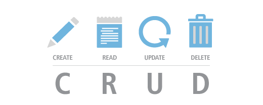

¿Qué es una API?
Una API ( Application Programming Interface ), o Interfaz de Programación de Aplicaciones, es un conjunto de rutinas que provee acceso a funciones de un determinado software , para efectos de esta nota, acceso a las funciones de nuestros sitios y aplicaciones web.
Dentro de los navegadores web tenemos dos tipos de APIs :
- APIs nativas , como el DOM que es el API que nos permite acceder al código HTML de nuestros documentos a través de JavaScript o la de Geolocalización que no permite acceder a las coordendas terrestres de nuestra ubicación actual; y,
- APIs externas, como la de Twitter que nos permite obtener los últimos tweets de un usuario, o la de GitHub que nos permite obtener la información de los repositorios de una cuenta o como la API de WordPress que nos permite acceder a la información de páginas y entradas de un sitio.
La mayoría de APIs externas del desarrollo web actual, funcionan con la Arquitectura REST.
¿Qué es REST?
El término REST ( Representational State Transfer ) o Transferencia de Estado Representacional, se originó en el año 2000, descrito en la tesis de Roy Fielding , padre de la especificación HTTP.
Un servicio REST es un conjunto de restricciones con las que podemos crear un estilo de arquitectura de software , la cual podremos usar para crear aplicaciones web respetando el protocolo HTTP.
Hoy en día la mayoría de las empresas utilizan API REST para crear servicios. Esto se debe a que es un estándar lógico y eficiente para la creación de servicios web.
Según Fielding las restricciones que definen a un sistema API REST o RESTful como también se le conoce, son:
- Cliente-Servidor , esta restricción mantiene al cliente y al servidor débilmente acoplados. Esto quiere decir que el cliente no necesita conocer los detalles de implementación del servidor y el servidor se olvida de entender cómo son usados los datos que envía al cliente.
- Sin Estado , significa que cada petición recibida por el servidor debería ser independiente, es decir, no es necesario mantener sesiones.
- Cacheable , debe admitir un sistema de almacenamiento en caché, lo que evitará repetir varias conexiones entre el servidor y el cliente para recuperar un mismo recurso.
- Interfaz Uniforme , significa una interfaz genérica para administrar cada interacción que se produzca entre el cliente y el servidor de manera uniforme, lo cual simplifica y separa la arquitectura. Esta restricción indica que cada recurso del servicio REST debe tener una única dirección ( URL ) web , a estas rutas se les da el nombre de endpoints.
- Sistema de Capas , el servidor puede disponer de varias capas para su implementación. Esto ayuda a mejorar la escalabilidad, el rendimiento y la seguridad.
Si creas aplicaciones web con JavaScript , las API REST probablemente serán la forma principal de obtener datos para tus aplicaciones, así como la de enviar datos hacia una base de datos.
Así que... ...sí las API REST , son el nuevo CRUD del desarrollo moderno, con la ventaja de que puedes desacoplar tu la lógica de tu cliente de la del servidor y la base de datos.

| Operaciones CRUD | Peticiones REST |
|---|---|
| INSERT | POST |
| SELECT | GET |
| UPDATE | PUT |
| DELETE | DELETE |

Otra ventaja de este modelo de desarrollo es que puedes usar un mismo origen de datos para distintos clientes, por ejemplo un cliente nativo ( iOS , Android ), un cliente de escritorio ( Windows ) o un cliente web (Navegadores).